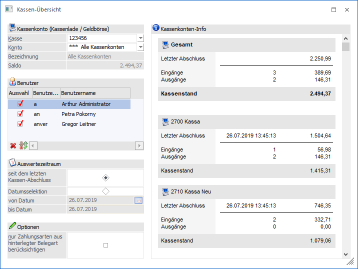
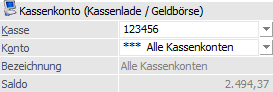
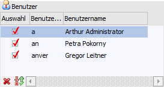
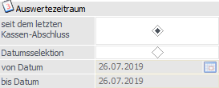
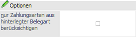
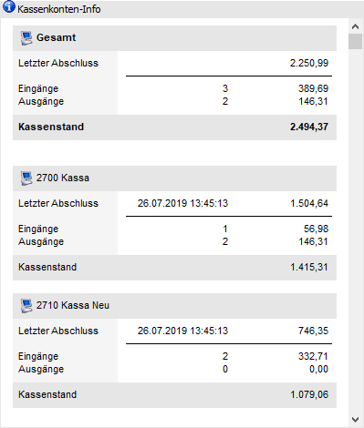
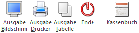

Über den Menüpunkt…
1 WinLine FAKT
1 Auswertungen
1 Kassen-Übersicht
… kann eine Auswertung aller Kassen durchgeführt werden.
Hinweis
Beim Öffnen des Menüpunktes wird geprüft, ob im Menüpunkt "Kassenstamm" bereits eine Kassenidentifikationsnummer und ein FIBU-Konto hinterlegt wurden und ob der Benutzer laut Kassenstamm die Berechtigung zur Erstellung von Barfakturen auf der Eingabestation hat. Ein Admin-Benutzer kann den Menüpunkt auch ohne entsprechende Hinterlegung im Kassenstamm aufrufen.

Folgende Eingabefelder stehen zur Verfügung:
Kassenkonto (Kassenlade / Geldbörse)

Ø Kasse
Aus der Auswahlliste kann die Kassenidentifiationsnummer ausgewählt werden, für welche die Kassen-Übersicht ausgegeben werden soll.
Ø Konto
Über die Auswahlliste "Konto" kann das gewünschte Kassenkonto ausgewählt werden. In dieser Auswahl werden alle Konten angezeigt, für welche der Benutzer laut Kassenstamm die Berechtigung hat, für einen Admin werden alle im Kassenstamm verwendeten Kassenkonten und ein zusätzlicher Eintrag "alle Kassenkonten" angezeigt.
Hinweis 1
Nach dem Öffnen des Fensters wird jenes Konto vorgeschlagen, welches dem Benutzer und der Eingabestation laut den Einstellungen im Kassenstamm entspricht. Ist für den Benutzer sowohl für die Eingabestation, als auch für "alle Eingabestationen" ein Eintrag vorhanden, wird jener für die aktuelle Eingabestation verwendet. Wenn im gefundenen Benutzer-Eintrag kein Konto eingetragen ist, wird das Default-Konto aus dem Kassenstamm verwendet.
Hinweis 2
Für Admin- Benutzer ohne Eintrag im Kassenstamm wird ebenfalls das Default-Konto verwendet.
Ø Bezeichnung
Nach Auswahl eines Kontos wird an dieser Stelle die Bezeichnung des Sachkontos angezeigt.
Ø Saldo
An dieser Stelle wird der Saldo des Kassenkontos, welches zuvor gewählt wurde, angezeigt. Bei Anwahl des Eintrags "*** - Alle Kassenkonten" wird der Saldo der betroffenen Konten aufsummiert und dargestellt.
Benutzer

In dieser Tabelle werden alle Benutzer angezeigt, welche für das gewählte Kassenkonto die Berechtigungen laut dem Menüpunkt "Kassenstamm" haben. Für "*** - Alle Kassenkonten" werden alle Benutzer angezeigt, die für zumindest eines der Kassenkonten die Berechtigung haben.
Ø Auswahl
Durch Aktivierung der Checkbox "Auswahl" werden die Kassenbuchungen der Benutzer bei der Ausgabe auf Bildschirm, Drucker und Tabelle berücksichtigt.
Auswertezeitraum

Für den Auswertezeitraum stehen folgende Optionen zur Verfügung:
Ø seit dem letzten Tagesabschluss
Mit dieser Option wird die Übersicht vom letzten Tagesabschluss bis zum aktuellen Tagesdatum ausgegeben.
Ø Datumsselektion
Hier kann ein bestimmter Zeitraum eingetragen werden, welcher in der Ausgabe der Übersicht berücksichtigt wird.
Hinweis
Bei der Auswahl Datumselektion werden die Felder "von Datum" und "bis Datum" mit dem Tagesdatum vorbelegt.
Optionen

Ø nur Zahlungsarten aus hinterlegter Belegart berücksichtigen
Mit aktivierter Option werden nur jene Konten berücksichtigt, welche in den aktivierten Zahlungsarten der verwendeten Belegart der Kasse/Kassen verwendet werden.
Das bedeutet, dass pro Kasse eine eigene Belegart und in dieser Belegart eigene Zahlungsarten zugewiesen werden sollten, damit die Funktion richtig abgebildet werden kann.
Kassenkonten-Info

Für das ausgewählte Konto wird rechts im Fenster eine Kassenkonten-Info angezeigt und beim Wechseln des Kassen-Kontos wird die Information entsprechend aktualisiert. Es werden das Datum und der Saldo des letzten Tagesabschlusses, die Anzahl und Summe von Ein- und Ausgängen seit dem letzten Tagesabschluss und der aktuelle Saldo für das Kassenkonto angezeigt.
Ist der Eintrag "*** - Alle Kassenkonten" ausgewählt, so wird oben eine Summe über alle Kassenkonten angezeigt und darunter die einzelnen Konten-Summen.
Hinweis
In diesen Summen werden die Buchungen aller berechtigten Benutzer berücksichtigt, eine eventuelle Selektion hat hier keine Auswirkung.
Buttons

Ø Ausgabe Bildschirm
Mit Hilfe des Buttons "Ausgabe Bildschirm" oder der Taste F5 wird die Auswertung am Bildschirm ausgegeben.
Ø Ausgabe Drucker
Durch Anwahl des Buttons "Ausgabe Drucker" wird die Auswertung am Drucker ausgegeben.
Ø Ausgabe Tabelle
Mit Hilfe des Buttons "Ausgabe Tabelle" werden alle einzelnen Buchungen anhand einer Tabelle angezeigt. Diese können mit verschiedenen Selektionen ausgegeben bzw. angezeigt werden.
Ø Ende
Durch Anwahl des Buttons "Ende" bzw. der Taste ESC wird das Fenster geschlossen.
Ø Kassenbuch
Beim Druck auf den Button "Kassenbuch" wird direkt der Menüpunkt "Kassenbuch" (WinLine FIBU) geöffnet, mit dem gewählten Kassenkonto vorbelegt und eine Ausgabe am Bildschirm gestartet.
Hinweis
Für "alle Kassenkonten" ist der Button "Kassenbuch" nicht verfügbar.